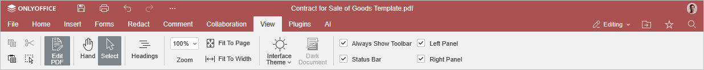

Using macros
To make your work more efficient, use macros to perform the repeatable actions and quickly edit the file.
Learn more about macros and how to write them in our API documentation.
Recording macros
Apart from writing your macros, you can record them on the go.
-
Go to the View tab.

- Click the Record macro button.
-
Follow the steps of the process you want to turn into a macro. Only the actions directly corresponding with the ones in Docs API will be recorded, e.g.:
- formatting the text;
- inserting images, shapes, and equations;
- editing shapes and adjusting their settings.
- On the View tab, click Pause recording to temporarily halt the recording process, if necessary.
-
Click the Stop recording button to finish the recording process. The resulting macro is saved automatically.
Recorded macros are generated as JavaScript code that relies on Docs API.
-
To access and edit the recorded macros, click the Macros button on the View tab. Edit the required macro as necessary.
Please note that all saved macros are not standalone files and are accessible only through the document they are recorded in.